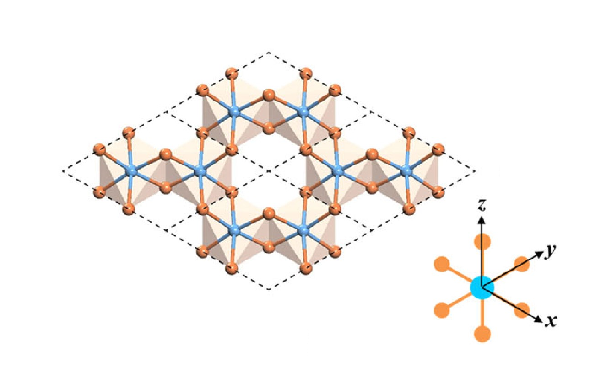

多铁材料研究的展望
有待解决的若干重大问题与相关要点：
发现一种室温强耦合的新型多铁材料
目前发现的多铁材料都有或多或少的缺点，距离现实实际的生产生活仍然有着一定的距离。为了达到应用的目的，仍然需要寻找出室温下稳定性高，电磁性质关联度高的多铁材料。寻找能广泛应用的多铁材料是贯穿整个多铁材料研究的重要目的之一。
利用原子尺度设计与逐层生长技术相结合，改良现有的多铁复合材料
随着新的实验与理论工具的不断成熟与发展，原子尺度设计与逐层生长技术成为制备寻找新型使用多铁材料的重要手段之一。
发展并提出新的电磁耦合机制，探索与接近理论极限
从当今对多铁材料的研究看来，还是没有一种完美的对多铁性质的通用解释。随着人们对多铁材料的实验积累越来越多，对多铁材料的认识越来越深入，需要新的更合适的理论方案来解释新的实验现象与对新材料进行理论计算预测。
理解控制与应用铁磁铁电转换动力学
多铁材料研究的核心之一是多铁材料内部铁磁性与铁电性的耦合关系与具体实现机制，磁相互作用与电相互作用的转换动力学是研究的关键点之一。
多铁性在物理学其他领域的现象与作用
多铁性材料在凝聚态物理的其他领域或许有着其他新现象或者作用。

二维溴化铬微观结构 每个铬离子与周围六个溴离子相连，一个溴离子与两个铬离子相连。铬离子在空间平面中构成六边形网状结构。